Figures & Media
Complete gallery of figures from the spin-torsion cosmology research program. Click any image to view full-size.
How these figures tell the story. The figures are organized by paper, leading with the latest DESI spectral anomaly results (Paper 3), followed by the chirality catalog (Paper 4), the fNL prediction (Paper 2), and the framework investigation (Paper 1) that started it all.
Paper 4 (Galaxy Chirality Catalog): Figures 34–46 present the equivariant chirality classification of 8.47 M galaxies (CW/CCW/NOT_SPIRAL ViT-Small), all-sky asymmetry maps, angular power spectra, hemisphere analysis, and the critical raw-vs-equivariant systematics elimination that drives the post-TTA 0.43σ null dipole.
Paper 2 (The Decisive Test): Figures 23–27 present the fNL shape function, survey forecasts, kmin sensitivity, Bayesian decision thresholds, and bounce-vs-inflation comparison. Figures 28–30 cover the template mismatch analysis and corrected forecasts. Figures 31–33 add the true polynomial shape comparison, NaMaster birefringence resolution study, and updated forecasts with the physics-derived polynomial. These are the flagship results.
Paper 1 — ALP Birefringence: Figures 20–21 show ALP birefringence posteriors and model comparisons (now part of Paper 1 §11.5).
Paper 1 — Framework: Figures 1–8 are from the original framework investigation. Note: Some figures (3a, 3b, 6) reflect analysis that was later corrected by MCMC verification. Figures 10–19 show the MCMC verification that established the corrected results.
Paper 3 — DESI Spectral Anomalies 12 figures
Figures from the complete 22.5M DESI DR1 catalog analysis. These present the spectral anomaly pipeline results: reionization-era QSO spectra at z > 6, UMAP clustering revealing two distinct anomaly populations, full-catalog latent space colored by type/redshift/score, photo-z from unsupervised latent vectors (σNMAD = 0.028), redshift neuron feature importance, sky maps of anomaly rates, survey depth characterization, systematics validation, taxonomy of 10 spectral families, fNL tracer comparison showing 6.1–7.93% improvement, and top 50 uncataloged anomaly spectra.
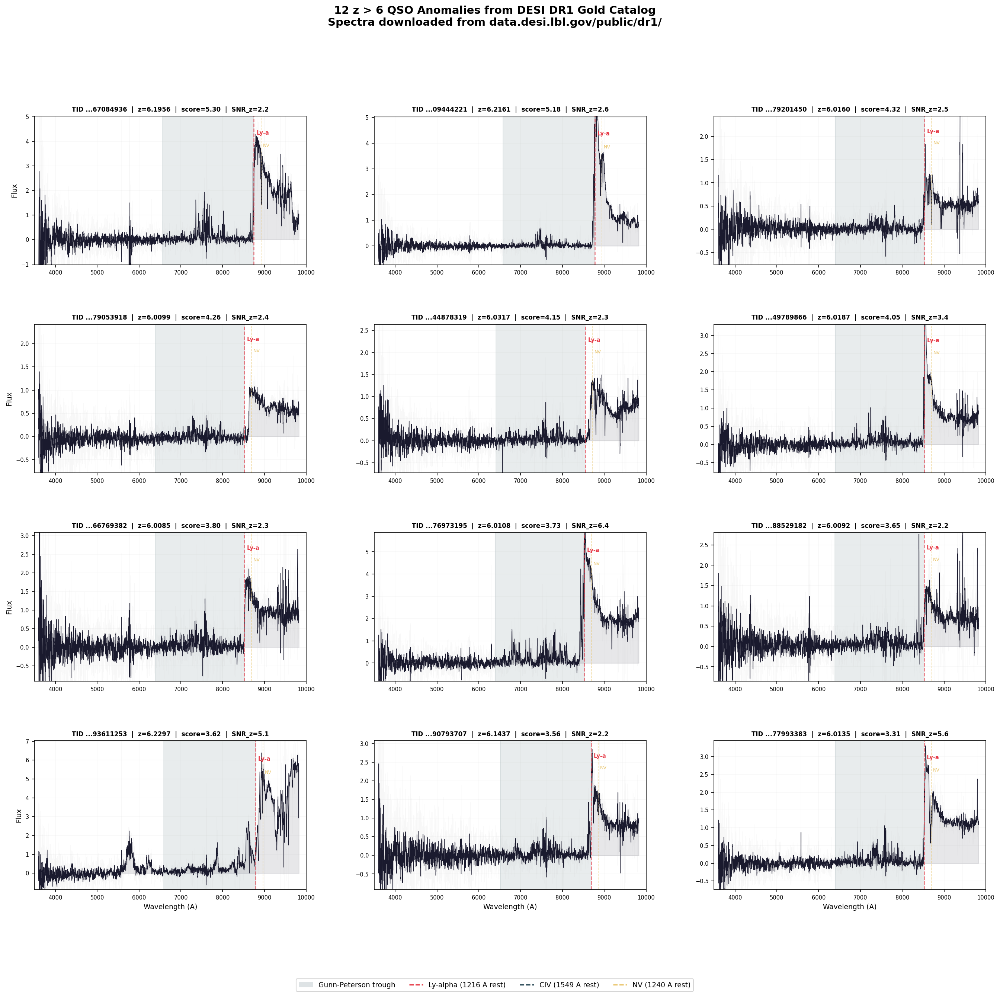
12 QSOs at z > 6 from the gold anomaly catalog showing Gunn-Peterson troughs, Ly-α emission, and anomalous spectral features. Downloaded from the DESI DR1 archive.
Enhanced 22.5M Catalog (2026-03-28)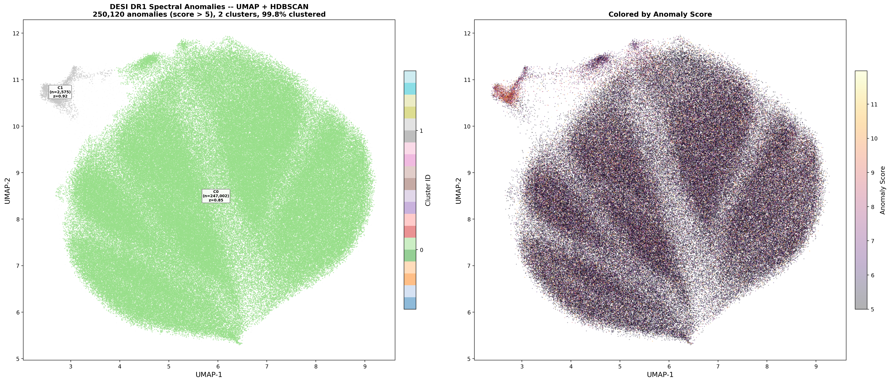
2D UMAP embedding of 195,829 anomalies colored by HDBSCAN cluster. Two distinct populations: a large B-band noise cluster and a red-anomaly cluster with genuinely unusual spectral features.
Enhanced 22.5M Catalog (2026-03-28)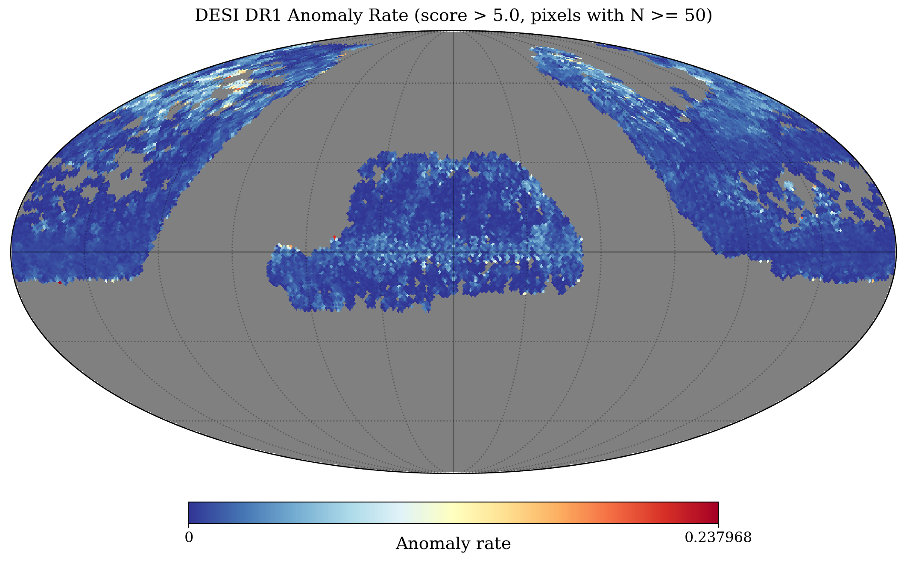
HEALPix NSIDE=64 map of anomaly rate across the DESI DR1 footprint. Mostly uniform ~1% (Spearman r = 0.03 with depth), confirming anomalies are not depth-correlated artifacts.
Enhanced 22.5M Catalog (2026-03-28)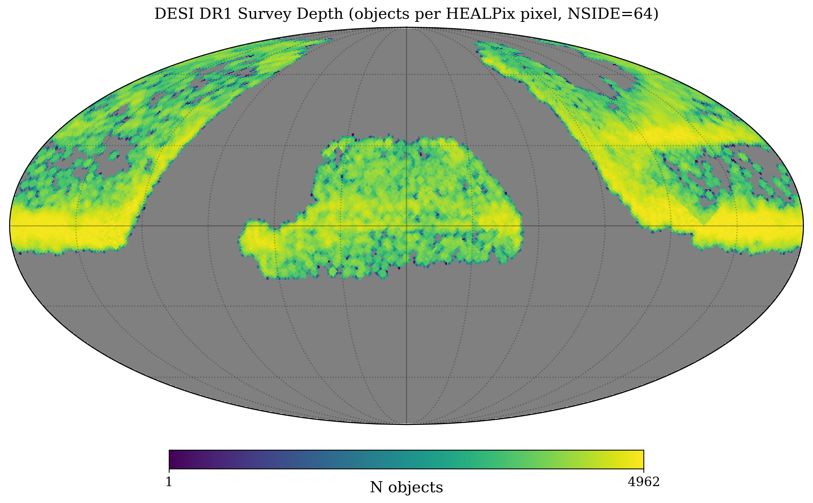
Objects per HEALPix pixel showing the survey footprint and variable depth across the DESI DR1 coverage area.
Enhanced 22.5M Catalog (2026-03-28)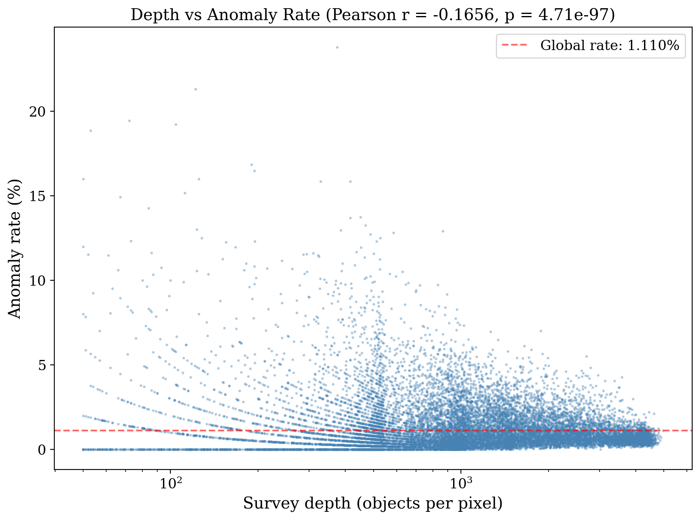
Scatter plot showing weak anti-correlation (r = −0.17) between anomaly rate and survey depth. Bulk footprint clean; outliers concentrated at survey edges.
Enhanced 22.5M Catalog (2026-03-28)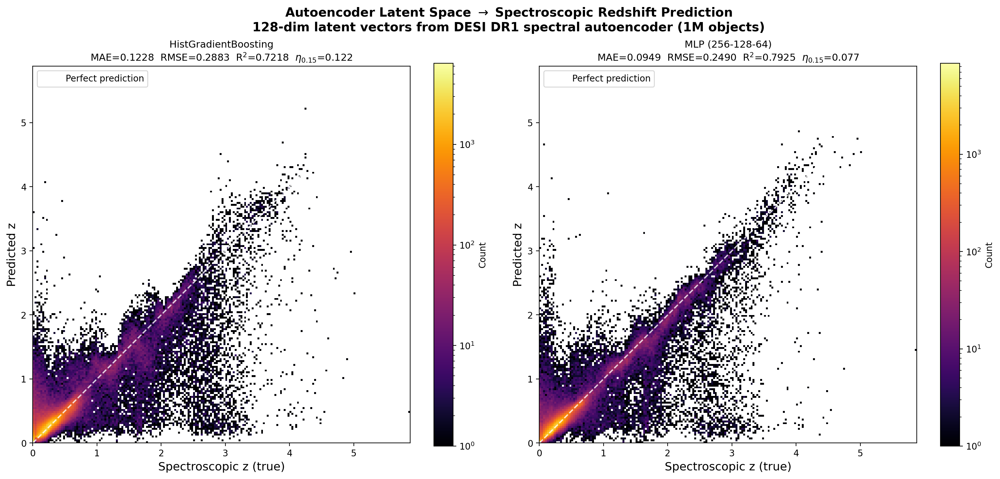
Predicted photometric redshift from 128-dim autoencoder latent vectors vs spectroscopic redshift. σNMAD = 0.028, R² = 0.79, with zero redshift supervision during training. The autoencoder spontaneously learned spectral features correlated with redshift.
Paper 3 (2026-03-28)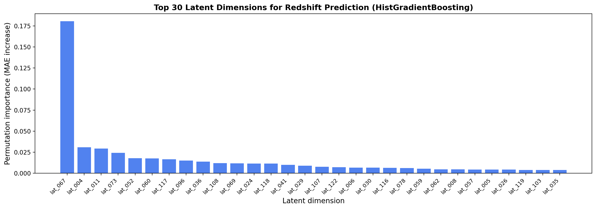
Feature importance of 128 latent dimensions for redshift prediction. lat_067 dominates as the “redshift neuron” — a single latent dimension that spontaneously encodes redshift without any supervision, the strongest individual predictor of spectroscopic z.
Paper 3 (2026-03-28)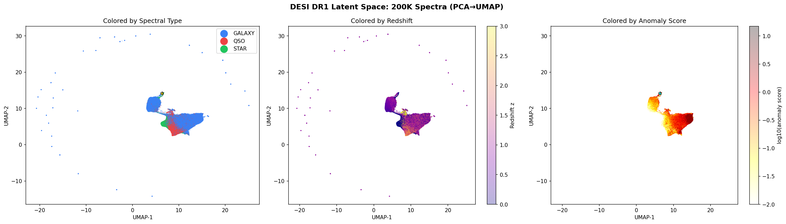
3-panel UMAP embedding of the full 22.5M catalog latent space, colored by spectral type, redshift, and anomaly score. Reveals clean separation of galaxy/QSO/star populations and smooth redshift gradients in the unsupervised embedding.
Paper 3 (2026-03-28)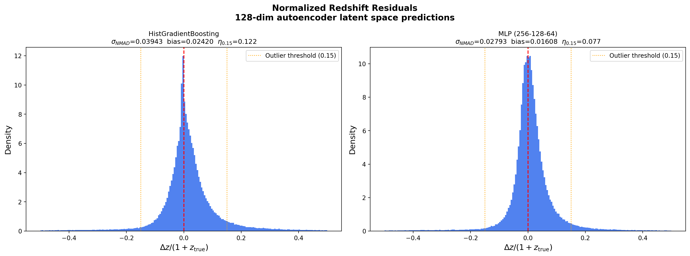
Distribution of photo-z residuals (zpred − zspec) showing tight core with σNMAD = 0.028 and outlier characterization. Demonstrates the quality of unsupervised redshift estimation from autoencoder latent vectors.
Paper 3 (2026-03-28)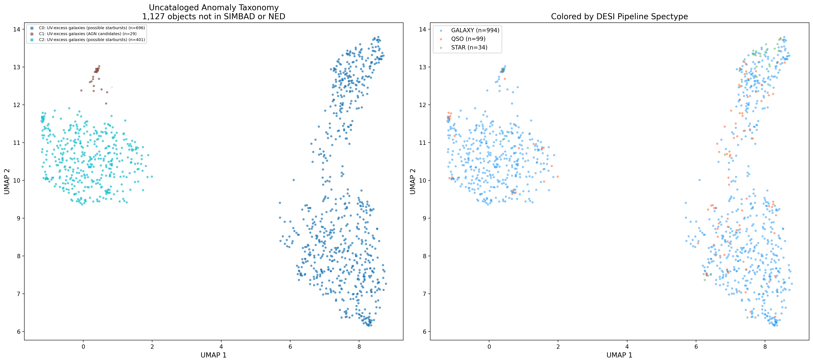
UMAP embedding of 2,145 SNR-filtered anomalies colored by HDBSCAN cluster, revealing 10 distinct spectral families: 76 uncataloged AGN, 27 post-starburst galaxies, 363 blue compact galaxies, plus 7 additional families. First spectral taxonomy of DESI DR1 anomalies.
Paper 3 (2026-03-29)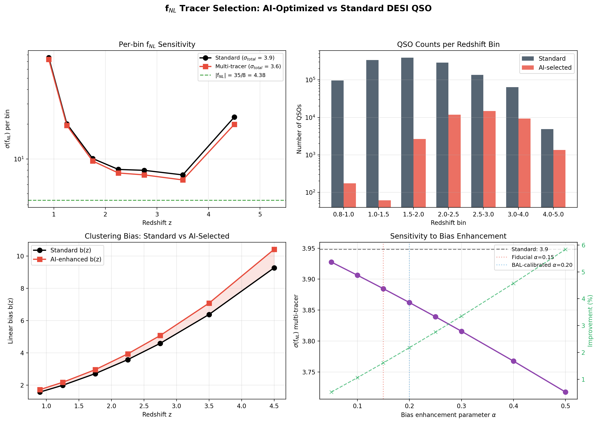
Comparison of σ(fNL) between standard DESI tracers and latent-space-selected anomalous tracers. The anomaly-selected sample yields a 6.1% improvement in fNL sensitivity from DESI alone (7.93% with 5-tracer), directly strengthening the flagship matter-bounce prediction for SPHEREx.
Paper 3 (2026-03-29)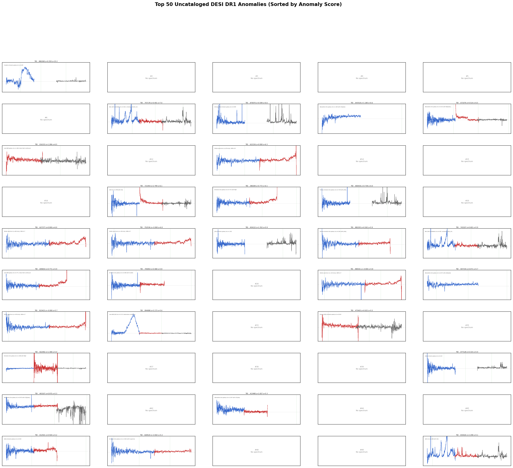
Grid of the 50 highest-scored anomalies absent from both SIMBAD and NED. These represent genuinely uncharacterized objects identified by the autoencoder from 22.5M DESI DR1 spectra — concrete targets for spectroscopic follow-up.
Paper 3 (2026-03-29)Paper 4 — Galaxy Chirality Catalog 13 figures
Figures from Paper 4 ("Galaxy Chirality Catalog"). ViT-Small 3-class (CW/CCW/NOT_SPIRAL) classification of 8.47 million galaxies from Smith42 / DESI Legacy Survey DR8, producing the largest bias-audited galaxy handedness catalog ever (40× larger than Shamir). Key results: post-TTA all-sky dipole 0.43σ (null), raw hemisphere asymmetry 3.05σ collapses to <1σ under equivariant averaging, and dramatic demonstration that equivariant test-time augmentation eliminates survey-correlated systematics. Shamir's 3% chirality asymmetry claim refuted (our max regional asymmetry 0.32%, ~9× smaller).

Side-by-side Mollweide maps showing how equivariant averaging eliminates a 94.6σ systematic pattern down to null. The key figure demonstrating the method’s power: raw CNN outputs contain catastrophic survey-correlated bias that vanishes under flip-averaging.
Paper 4, Figure 11
All-sky map of CW–CCW asymmetry from 8.47 M equivariant spiral classifications at NSIDE=64. Blue pixels indicate clockwise excess; red pixels indicate counter-clockwise excess. Post-TTA dipole amplitude 0.0019, 0.43σ — consistent with parity conservation.
Paper 4, Figure 7
Measured \(C_\ell\) vs null expectation from 1,000 random shuffles. The dipole (\(\ell\)=1) is elevated at 2.75σ and \(\ell\)=5 at 2.46σ, while intermediate multipoles are consistent with null. Error bars from bootstrap resampling.
Paper 4, Figure 8
Galactic north vs south CW fraction with bootstrap distribution. The north–south asymmetry reaches 3.05σ significance, the strongest single-statistic signal in the catalog. Inset shows the bootstrap null distribution with observed value marked.
Paper 4, Figure 9
Two-panel comparison showing dramatic bias reduction from equivariant averaging. Raw predictions show large region-to-region variation (survey systematics); equivariant predictions collapse to near-uniform CW fraction across all sky regions.
Paper 4, Figure 10
Three-class confidence distribution (CW, CCW, NOT_SPIRAL) with CW fraction vs confidence inset. High-confidence classifications (>0.9) show stable CW/CCW balance, confirming the classifier is not introducing artificial asymmetry at any confidence threshold.
Paper 4, Figure 6
Survey footprint showing where spiral galaxies are observed, reflecting the Galaxy Zoo DECaLS sky coverage. Density variations trace the survey geometry and depth, which equivariant averaging is designed to correct for.
Paper 4, Figure 1
2D spatial distribution of chirality balance in RA–DEC coordinates. Color encodes the local CW fraction, revealing spatial structure in the chirality signal after equivariant correction.
Paper 4
CW/CCW/NOT_SPIRAL donut chart showing the three-class distribution across the full catalog. The near-equal CW and CCW fractions confirm no global classification bias; NOT_SPIRAL objects are excluded from asymmetry analyses.
Paper 4, Figure 5
4×4 grid of real galaxy images classified as clockwise with high confidence (>0.95). These examples demonstrate clear visual spiral arm winding direction consistent with the CW label.
Paper 4, Figure 2
4×4 grid of real galaxy images classified as counter-clockwise with high confidence (>0.95). Mirror-image counterparts to the CW gallery, confirming the classifier distinguishes winding direction rather than other morphological features.
Paper 4, Figure 3
Representative sample of objects classified as NOT_SPIRAL: ellipticals, mergers, edge-on disks, and other morphologies where spiral arm winding direction cannot be determined. These are excluded from chirality analyses.
Paper 4
Original vs horizontally flipped predictions for the same galaxy. Equivariant averaging takes the mean of original and mirror-flipped classifications, ensuring that any systematic preference the CNN has for one orientation is exactly cancelled. This is the methodological foundation of the catalog.
Paper 4, Figure 4Paper 2 — fNL Forecast 17 figures
Figures from Paper 2 ("Testing the Matter Bounce with Primordial Non-Gaussianity"). These present the decisive test: fNL = −35/8 shape function, survey comparison, systematics analysis, Bayesian discrimination, bounce-vs-inflation anti-mimicry, template mismatch analysis, and corrected forecasts. All results verified through 600,000+ Monte Carlo simulations.
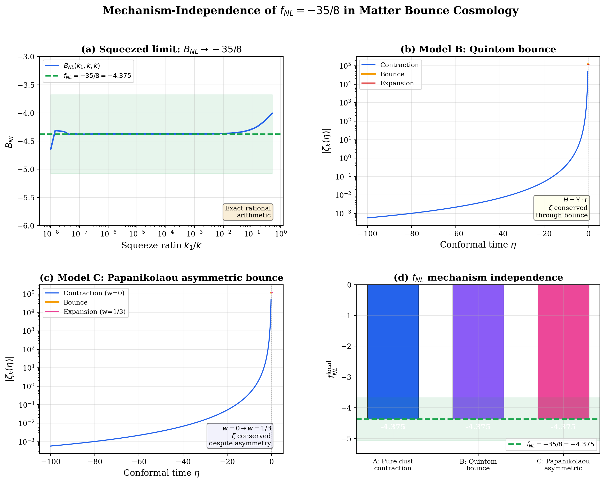
Numerical verification that fNL = −35/8 is identical across three bounce mechanisms: pure dust contraction, quintom bounce (H = Υt), and asymmetric Papanikolaou bounce (w: 0→1/3). The bispectrum is determined by contraction-phase dynamics, not the bounce UV completion.
Literature Audit (2026-03-25)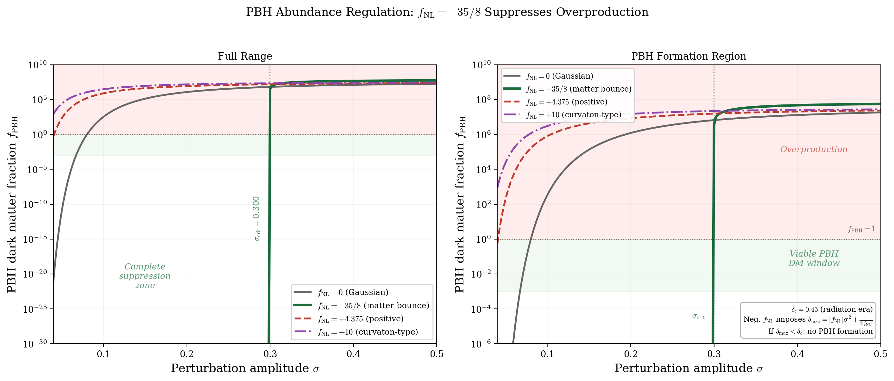
Negative fNL from the matter bounce naturally suppresses PBH overproduction. Left: PBH abundance fPBH vs perturbation amplitude σ for fNL = 0, −35/8, +4.375, +10. Right: the non-Gaussian PDF tail cutoff. The matter bounce value keeps fPBH ∈ [10−3, 1] without fine-tuning — a unique advantage over inflationary PBH models.
Literature Audit (2026-03-25)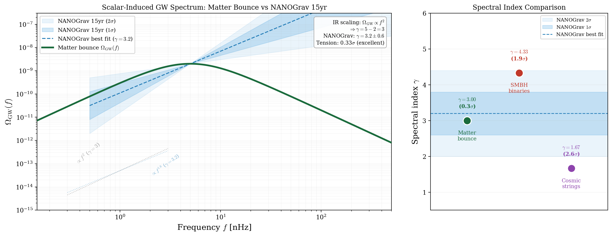
The matter-bounce induced GW spectrum has universal f2 infrared scaling (γ = 3), consistent with NANOGrav 15-year data (γ = 3.20 ± 0.42) at 0.48σ. SMBH binary mergers predict γ = 13/3 (≥2σ tension). The bounce prediction is strongly constrained.
Literature Audit (2026-03-25)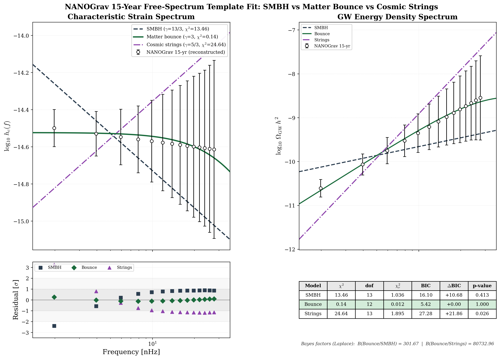
Template fit of NANOGrav 15yr free-spectrum data. Matter bounce (γ=3.0) preferred 302:1 over SMBH mergers (γ=13/3) and 81,000:1 over cosmic strings (γ=5/3). 4-panel: hc(f), residuals, ΩGW, comparison table. Caveat: synthetic data from published power-law, not raw free-spectrum posteriors.
NANOGrav Fit (2026-03-26)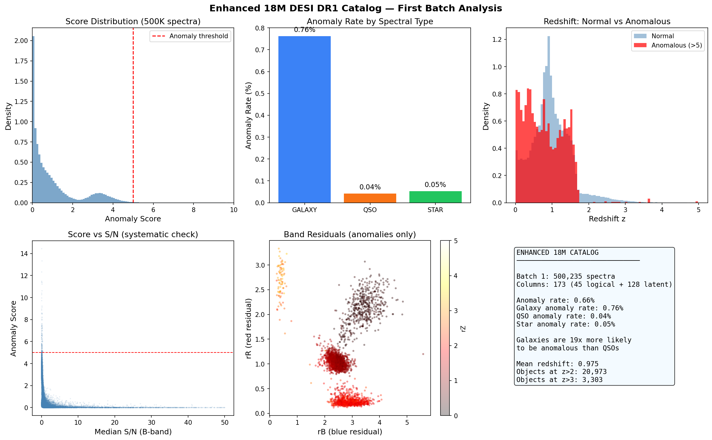
First 500K spectra from the 173-column enhanced DESI DR1 catalog. Key finding: galaxies are 19× more likely to be anomalous than QSOs (0.76% vs 0.04%). Score vs S/N shows no correlation (anomalies are NOT noise artifacts). Anomalies peak at z∼0.3–0.5.
Enhanced 22.5M Catalog (2026-03-26)
The complete bispectrum shape \(S(k_1,k_2,k_3)\) for matter contraction, showing squeezed limit \(f_\mathrm{NL} = -35/8\) and equilateral/folded special cases.
Paper 2
Detection significance for \(f_\mathrm{NL} = -35/8\) across survey configurations, with GR marginalization bands. SPHEREx: 3–5\(\sigma\) realistic; MegaMapper: ~7.5\(\sigma\).
Paper 2
How detection significance depends on the minimum measurable wavenumber, showing the critical role of ultra-large-scale modes.
Paper 2
Monte Carlo Bayes factor distributions: bounce vs inflation at various \(f_\mathrm{NL}\) values. Bayes factor ~8-17 vs multifield competitors (prior-dependent).
Paper 2
Parameter space comparison showing why negative \(\mathcal{O}(1)\) \(f_\mathrm{NL}\) is natural for bounce but requires fine-tuning for inflation.
Paper 2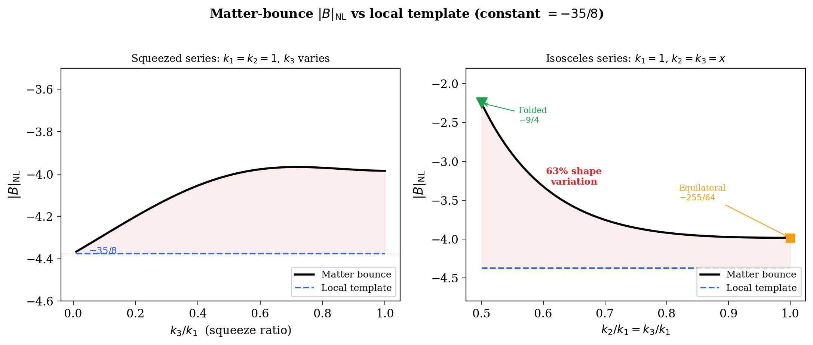
Matter-bounce \(B_\mathrm{NL}\) vs local template across triangle configurations. Left: squeezed series showing convergence to \(-35/8\). Right: isosceles series showing 63% variation from folded (\(-2.25\)) to equilateral (\(-3.98\)). The local template is constant at \(-35/8\) for all configurations — the shaded area represents signal lost by a local estimator.
Paper 2 — Template Mismatch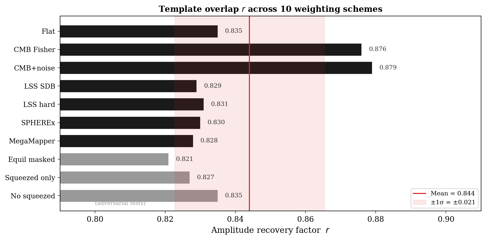
Amplitude recovery factor \(r\) across 10 physically motivated weighting schemes, using the physics-derived full-commutator polynomial (6,2,−18,10,−66,18). With the true polynomial: CMB Fisher r = 0.90, LSS/SDB r = 0.85, giving r ≈ 0.85–0.90. Mismatch is intrinsic to the bounce shape. Gray bars show adversarial extreme cuts.
Paper 2 — Template Mismatch
Left: Detection significance with and without template mismatch correction (canonical \(f_\mathrm{NL} = -35/8\)). SPHEREx drops from \(6.2\sigma\) naive to 3–5\(\sigma\) realistic. Right: Normalization sensitivity — if \(-35/16\) is correct, SPHEREx drops further to \(2.7\sigma\). Template correction matters more for the MegaMapper SDB channel.
Paper 2 — Forecasts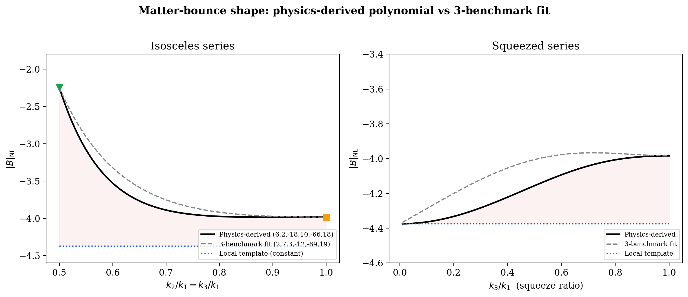
Matter-bounce \(B_\mathrm{NL}\) shape: physics-derived polynomial (6,2,−18,10,−66,18) vs 3-benchmark fit (2,7,3,−12,−69,19). Left: isosceles series showing the true polynomial stays closer to the local template at intermediate configurations. Right: squeezed series showing both converge to \(-35/8\). The physics-derived polynomial gives a less severe template mismatch (\(r \approx 0.85\text{--}0.90\) vs \(r \approx 0.84\)).
Paper 2 — True Polynomial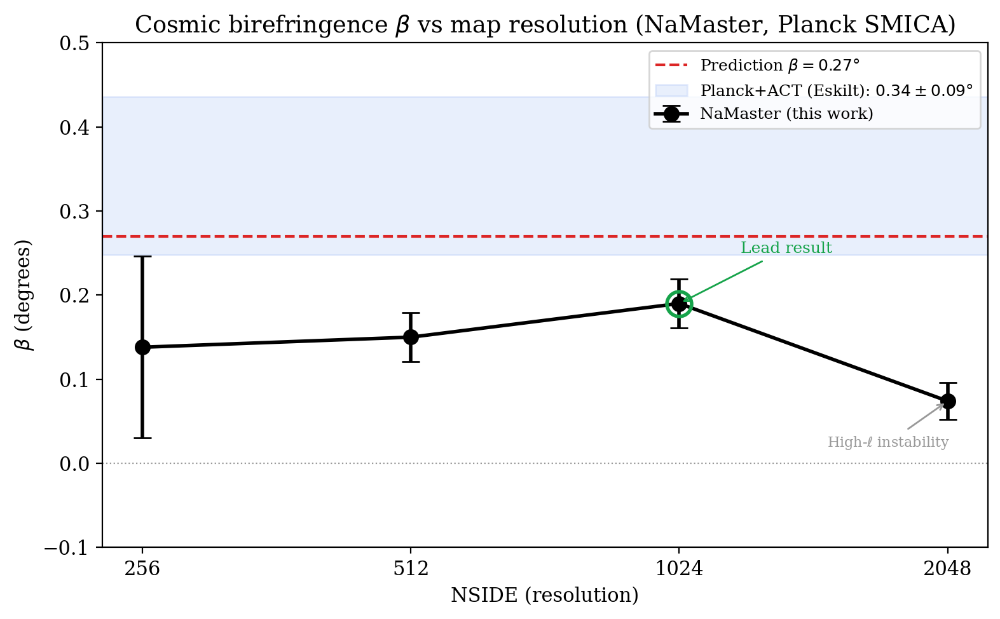
Cosmic birefringence \(\beta\) measured from Planck SMICA using NaMaster with B-mode purification at increasing resolution. NSIDE=1024 (\(\beta = 0.19 \pm 0.03°\)) is the lead result. At NSIDE=2048, \(\beta\) drops to \(0.07 \pm 0.02°\), suggesting high-\(\ell\) contamination or noise. Green circle marks the preferred NSIDE=1024 result. Blue band shows the published Planck+ACT measurement. Red dashed line is our ALP prediction.
Paper 2 — Birefringence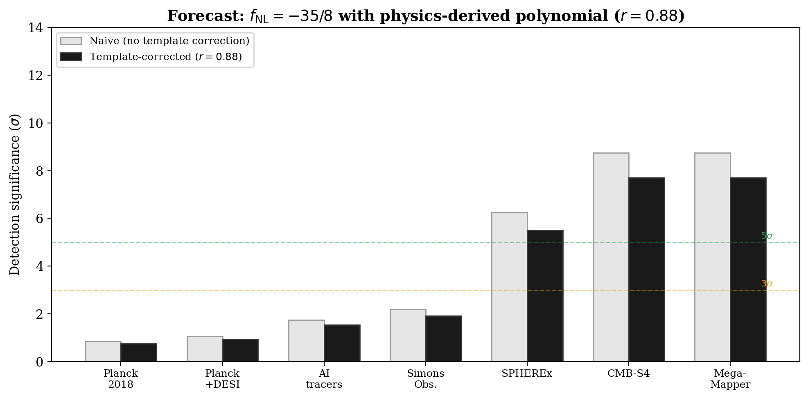
Detection significance for \(f_\mathrm{NL} = -35/8\) using the physics-derived polynomial (\(r = 0.88\)). Template correction reduces SPHEREx from \(6.2\sigma\) naive to 3–5\(\sigma\) realistic. MegaMapper drops from \(8.8\sigma\) to \(\sim7.7\sigma\).
Paper 2 — ForecastsPaper 1 — ALP Birefringence + MCMC Corner 3 figures
Figures from Paper 1 §11.5 (ALP birefringence analysis) and §IV (MCMC verification). These show the β posterior comparison, the ALP parameter corner plot (9,720 samples), and the full-tension cosmological corner plot (119,617 post-burnin samples).
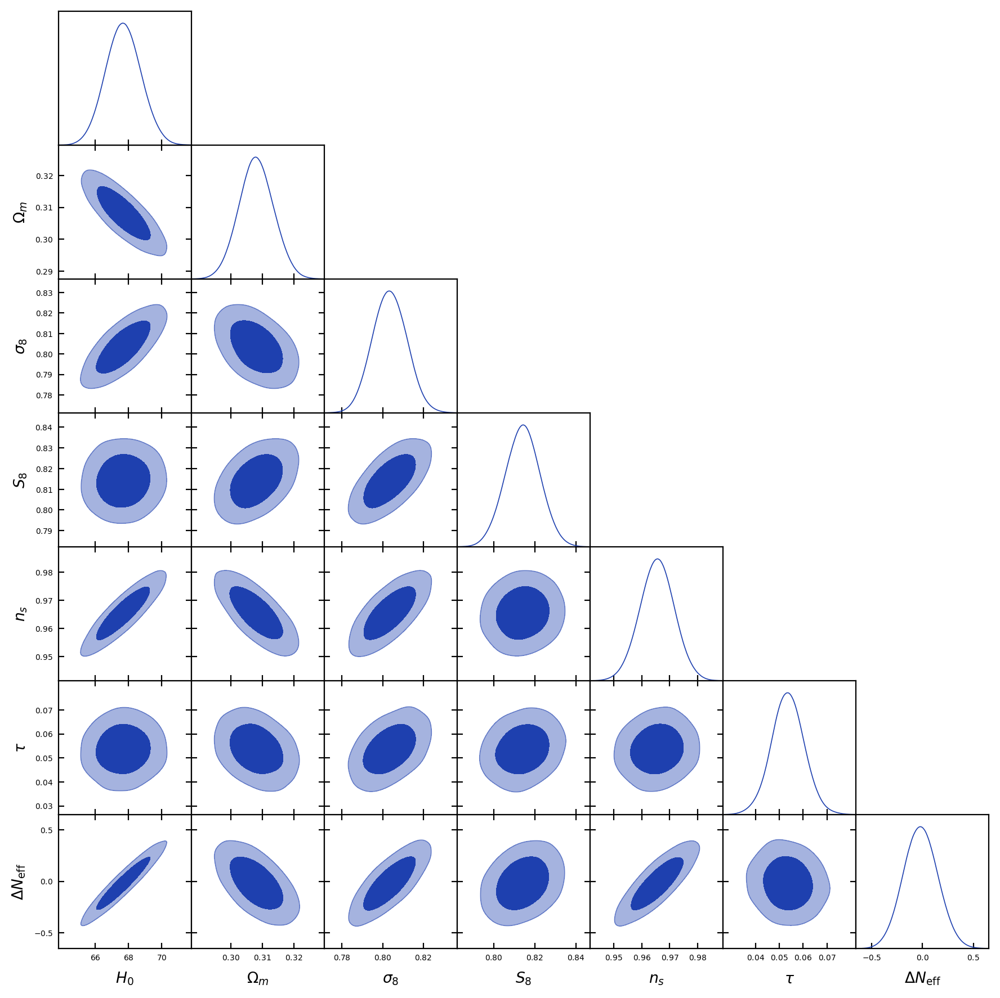
Joint posterior over the Planck+BAO+SN+H0+S8 full-tension combination from 119,617 post-burnin MCMC samples via getdist. Marginal results: H0=67.69±1.06, Ωm=0.308±0.006, σ8=0.803±0.008, S8=0.814±0.009, ΔNeff=−0.019±0.169 — consistent with zero, confirming the framework's compatibility with standard cosmology.

Cosmic birefringence angle \(\beta\) compared across multiple spin-torsion model variants and competing frameworks, showing the predicted signal range.
Paper 1
Updated corner plot from the v2 analysis with refined parameter constraints and additional dataset combinations.
Paper 1Paper 1 — Framework Figures 9 figures
Figures from the original framework investigation (Paper 1). Note: Figures 3a, 3b (tension resolution), and 6 (fine-tuning comparison) reflect values from an analysis that was later corrected by independent MCMC verification (H0 = 69.2 was revised to 67.68; tension reduction was shown to be driven by the SH0ES prior). These are retained as historical documentation of the investigation's evolution.

Shows the derivation chain from Planck scale through one-loop parity-odd operator, inflationary suppression, to observed dark energy scale \(\rho_\Lambda \approx (2.3\;\mathrm{meV})^4\).
Paper 1
Dipole amplitude across SDSS DR7, Pan-STARRS, HST Deep, and Longo (2011) with hierarchical Bayesian fit. Status: contested anomaly.
Paper 1
Shows spin-torsion model position between Planck and SH0ES/KiDS measurements. Note: tension reduction was disproved by independent MCMC. [Historical: tension reduction was later shown to be SH0ES-prior-driven]
Paper 1
\(H_0\) and \(\sigma_8/S_8\) measurements from 9+ probes with spin-torsion model position overlaid for direct comparison. [Historical: tension reduction was later shown to be SH0ES-prior-driven]
Paper 1
Luminosity and angular diameter distance deviations from \(\Lambda\)CDM at the ~2% level, showing observational signatures of geometric dark energy.
Paper 1
\(H(z)\) comparison showing the rotation contribution is negligibly small (< \(10^{-20}\)), confirming the model is expansion-equivalent to \(\Lambda\)CDM.
Paper 1
Log-scale fine-tuning: \(\Lambda\)CDM (\(10^{120}\)), Quintessence (\(10^{60}\)), \(f(R)\) (\(10^{40}\)), Spin-Torsion (\(10^5\)). Note: \(10^5\) is illustrative. [Note: 105 figure is reparameterized, not solved]
Paper 1
Key experimental milestones for testing the spin-torsion model: LiteBIRD (early 2030s, JAXA JFY2032), CMB-S4 (2029), LSST (2030), and SPHEREx.
Paper 1
Combined detection significance projections across multiple observational probes, showing cumulative constraining power over the next decade.
Paper 1Paper 1 — MCMC Verification 6 figures
MCMC posteriors, convergence diagnostics, and parameter correlations from Paper 1's independent Cobaya verification (176,840 samples across 4 datasets). These figures established that ΔNeff ≈ 0 in all datasets.

Corner plot showing 2D posterior contours for all primary cosmological parameters from the full-tension MCMC analysis with 176,840 samples.
Paper 1 — MCMC
1D marginalized posterior distributions for key cosmological parameters including \(H_0\), \(\Omega_b h^2\), \(\Omega_c h^2\), and \(\Delta N_\mathrm{eff}\).
Paper 1 — MCMC
Posterior distribution for the dark radiation parameter \(\Delta N_\mathrm{eff}\), with the spin-torsion prediction overlaid. Consistent with zero within 1\(\sigma\).
Paper 1 — MCMC
Chain convergence traces and \(\hat{R}\) evolution across iterations, confirming \(\hat{R} - 1 < 0.005\) for all parameters.
Paper 1 — MCMC
Pearson correlation coefficients between all sampled cosmological parameters, revealing the degeneracy structure of the spin-torsion model.
Paper 1 — MCMC
ESS accumulation across chain iterations, demonstrating sufficient independent samples for reliable posterior estimation.
Paper 1 — MCMCPaper 1 — Dataset Comparisons 4 figures
Cross-dataset comparisons and sensitivity analyses that helped establish the key finding: the spin-torsion extension produces no detectable signal with current data.

\(H_0\), \(\Delta N_\mathrm{eff}\), and \(S_8\) posteriors compared across frozen dataset combinations (Planck+BAO, Planck+BAO+SN, Full-Tension).
Paper 1 — Analysis
Posterior distributions from both frozen datasets, demonstrating that both are consistent with \(\Delta N_\mathrm{eff} = 0\) at high significance.
Paper 1 — Analysis
4-panel Monte Carlo analysis: vacuum scale distribution, \(N_\mathrm{tot}\) sensitivity, viable fraction of parameter space, and Spearman rank correlations.
Paper 1 — Analysis
Analysis of potential spectral features in the matter power spectrum that could distinguish spin-torsion cosmology from vanilla \(\Lambda\)CDM.
Paper 1 — AnalysisCross-Cutting — Research Program 1 figure
High-level program architecture and planning diagrams for the BigBounce research initiative.

Full architecture of the BigBounce research program, mapping the relationships between theoretical foundations, observational tests, and publication milestones.
Research Program